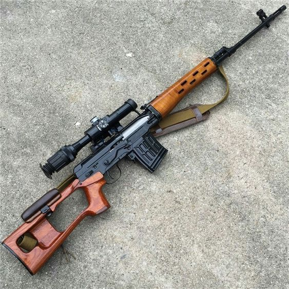
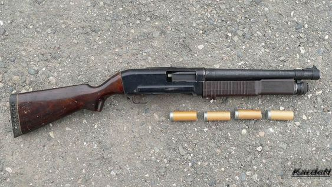

Armas Sovieticas
AK-74
El AK-74 es un fusil de asalto de origen ruso que fue desarrollado en la década de 1970 como una mejora del AK 47. Fue diseñado por Mikhail Kalashnikov, el mismo ingeniero que creó el AK-47, y fue adoptado por el ejército soviético en 1974.
El AK-74 utiliza el cartucho de rifle 5,45 × 39 mm, a diferencia del cartucho 7,62 × 39 mm utilizado por el AK-47. El cambio del calibre dle cartucho se hizo con el objetivo de mejorar la precisión y el control del retroceso del arma, aparte de que los soldados podian llevar mas municion debido a la reduccion del peso.
El AK-74 tiene una cadencia de fuego de 600 a 650 disparos por minuto.Su diseño es similar al del AK-47. Sin embargo, hay algunas diferencias. El AK-74 tiene un cargador curvado de plástico de 30 rondas, mientras que el AK-47 usa un cargador recto de acero de 30 rondas. Además, el AK-74 tiene un freno de boca diseñado para reducir el retroceso y mejorar la estabilidad del arma durante el disparo automático.
DRAGUNOV SVD
El Dragunov SVD, también conocido como SVD (Snaiperskaya Vintovka Dragunova), es un rifle de francotirador semiautomático de origen ruso. Fue diseñado por el famoso armero soviético Yevgeny Dragunov en la década de 1960 y entró en servicio con el ejército soviético en 1963.
El Dragunov SVD está diseñado para proporcionar un fuego preciso a larga distancia. Utiliza el cartucho 7,62 × 54 mm R. El rifle tiene un cañón largo y pesado, lo que contribuye a su precisión a larga distancia.
El SVD tiene un sistema de operación semiautomático, lo que significa que se dispara un solo disparo cada vez que se presiona el gatillo. Esto permite un mayor control y precisión del disparo en comparación con los rifles de francotirador de cerrojo. Tiene una capacidad de cargador de 10 rondas y puede ser alimentado tanto por cargadores desmontables como por alimentadores de cinta.
El diseño del Dragunov SVD es fácilmente reconocible por su forma distintiva. Cuenta con una culata de madera o polímero, con una mejilla ajustable para adaptarse a diferentes tiradores. También tiene un bípode plegable y una mira telescópica PSO-1 montada de serie, que proporciona aumentos variables y una retícula iluminada para facilitar la adquisición de objetivos.
KS-23
La KS-23 es una escopeta de calibre especial desarrollada y fabricada en la Unión Soviética. Fue diseñada en la década de 1970 como un arma destinada al uso policial y militar, y se caracteriza por su potencia y capacidad de disparo de munición no letal.
La KS-23 utiliza un calibre poco común de 23 mm, lo que le confiere un poder de detención significativo. Aunque está clasificada como una escopeta, su diseño y calibre la diferencian de las escopetas tradicionales. Puede disparar una variedad de municiones, incluyendo proyectiles de goma, perdigones de goma, granadas de gas y granadas antipersonales.
El diseño de la KS-23 es robusto y utiliza una culata y un guardamanos de madera o polímero. Tiene un cañón largo y pesado, lo que le proporciona una mayor precisión y alcance en comparación con las escopetas convencionales. La capacidad de carga varía según el modelo, pero generalmente oscila entre 3 y 5 cartuchos.
SKS

El SKS es un fusil semiautomático de origen soviético que fue desarrollado en la década de 1940 y ampliamente utilizado por los países del bloque oriental y otros aliados durante la Guerra Fría. También ha sido exportado y utilizado en muchas otras partes del mundo.
El SKS fue diseñado para utilizar el cartucho 7,62 × 39 mm, el mismo cartucho utilizado en el icónico AK-47. Aunque es un fusil semiautomático, se carga mediante un cargador interno fijo con capacidad para 10 rondas. La acción semiautomática del SKS permite disparar un solo disparo cada vez que se aprieta el gatillo, sin necesidad de realizar el ciclo manual del cerrojo.
El diseño del SKS es robusto y confiable. Tiene un cañón largo y un guardamanos de madera, con una culata fija. A diferencia del AK-47, no cuenta con una culata plegable. Sin embargo, algunos modelos posteriores del SKS incluyen una bocacha lanzagranadas que permite el montaje de un lanzagranadas de tipo RGD-5 o VOG-25